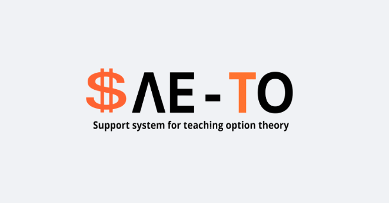

My Work, Projects and Certification

SAE-TO-Application
A web application developed in Django for analyzing real and financial options, created for university courses in economic engineering.
Automated Pavement Simulation Analysis
A sensitivity analysis project that used Python to automate thousands of simulations on a porous permeable pavement module using the EPA SWMM software.
Certified Data Science Professional 2025
The certification validates the ability for implementing machine learning solutions for specific business use cases. It also validates the ability to incorporate machine learning best practices.
Experience & Skills
Full Stack Web Developer - SoftFocus
February 2024 - Present
- Developed and maintained an API integration hub for data analysis, socio-environmental consulting, and credit evaluation.
- Implemented data anonymization and privacy protocols to ensure compliance with data protection regulations.
- Designed and maintained data pipelines and big data infrastructure using PostgreSQL, Apache Airflow, Kafka, and AWS.
- Modeled relational and distributed databases for ETL and real-time data processing.
Key Skills
Python
SQL
Django
FastAPI
Docker
AWS
Apache Airflow
PySpark
Big Data
Data Pipelines
Web Scraping
Agile Development
Get In Touch
I'm always open to discussing new projects, creative ideas, or opportunities to be part of your visions.
Email MePhone: +55 (46) 99140-730